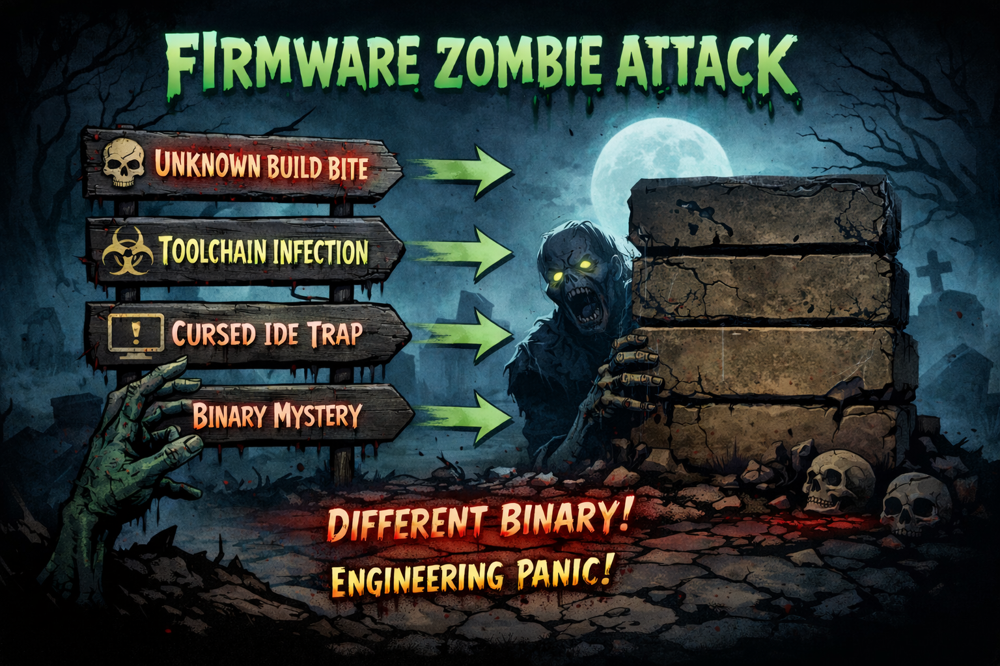
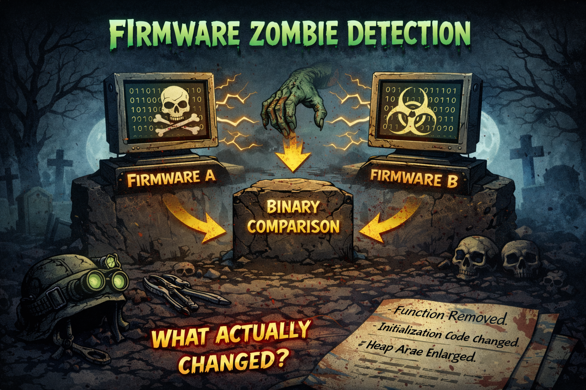
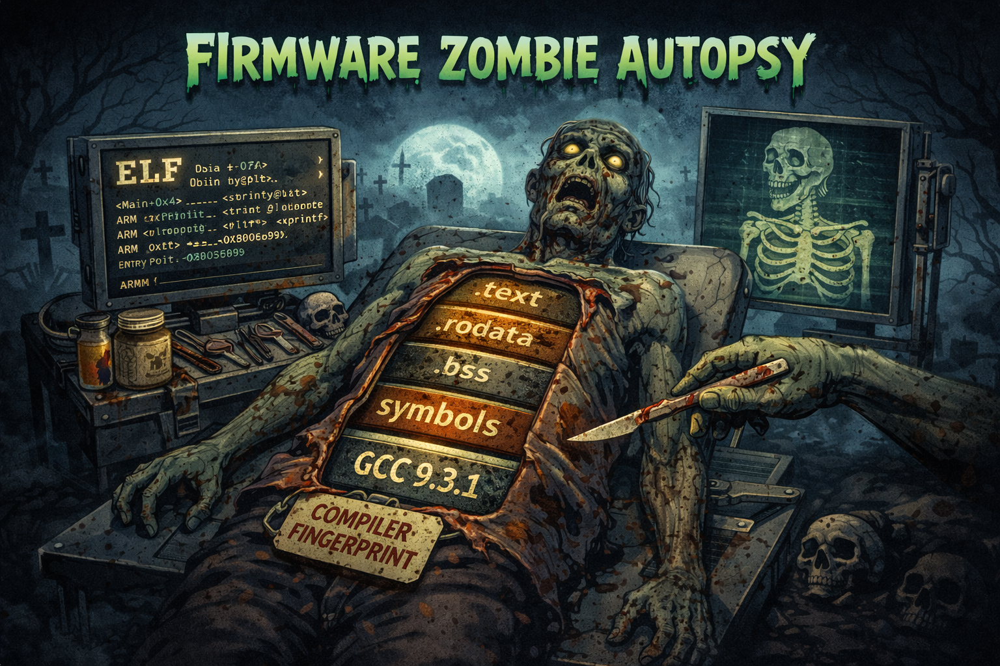

Firmware archaeology
Binary comparison
Reproducible builds
Raiders of the Lost Binary
We help engineers resurrect “zombie firmware” — projects that still run in the field, but nobody can rebuild. Identify what built the original binary, and see what actually changed between builds.
Lost Binary Labs
Zombie Firmware Slaying
A ↔ B
Build & compare
ELF
Sections & symbols
CI
Size regression gates
firmdiff
Build Variant A. Build Variant B. Compare outputs. Print results.
What it does
- Builds two configurations (flags, env, toolchain changes)
- Compares FLASH/RAM deltas
- Surfaces top symbol growth/shrink
- Works great in CI to block size regressions
Example
firmdiff run \
--name "O2 vs Os" \
--src . \
--artifact "{out}/app.elf" \
--a-cflags "-O2" \
--b-cflags "-Os" \
--max-flash-delta 2048Why it matters
Zombie firmware doesn’t bite you with obvious bugs. It bites you with unknown toolchains, hidden flags, and binaries that can’t be reproduced.
firmdiff is your “what changed?” detector.
Zombie Firmware Series
Visual stories for firmware teams dealing with undead builds.



Want these as a downloadable media kit? Open an issue on the repo and we’ll package them.
About Lost Binary Labs
We do firmware archaeology: toolchains, flags, binaries, and build truth.
What we believe
- If it only builds in an IDE, it’s already a zombie.
- If you can’t reproduce the binary, you can’t trust the fix.
- Toolchains should be pinned, builds should be scriptable.
What we build
- firmdiff — compare two builds
- binary “autopsy” tooling
- CI guardrails for firmware size regressions